◆「New Year2018Pick Up召喚(每日交替)」期間◆
期間:2017年12月31日(日) 23:00～1月10日(三) 11:591月19日(五) 11:59
※1月9日(二) 17:00修正
舉辦期間限定「New Year2018Pick Up召喚(每日交替)」！
初登場Servant「★5(SSR)葛飾北齋」以期間限定登場！
另外本次包含上述，對象7位★5(SSR)Servant以每日交替Pick Up！
對象★5(SSR)Servant「★5(SSR)宮本武藏」「★5(SSR)吉爾伽美什(Archer)」「★5(SSR)新宿的Archer」「★5(SSR)斯卡哈(Lancer)」「★5(SSR)玉藻前(Caster)」「★5(SSR)Meltlilith」「★5(SSR)葛飾北齋」出現機率提升！
※宮本武藏、吉爾伽美什(Archer)、新宿的Archer、斯卡哈(Lancer)、Meltlilith、葛飾北齋在Pick Up期間結束後不會追加到故事召喚。
※玉藻前(Caster)在Pick Up期間結束後仍會在故事召喚被抽出。
※請注意「New Year2018Pick Up召喚(每日交替)」為每日交替，「★5(SSR)葛飾北齋」在Pick Up期間中也會有不被抽出的日子。
詳情請在聖晶石召喚畫面左下的召喚詳細確認。
還有，“與“新年”有關的概念禮裝「★5(SSR)ニュー・ビギニング」「★4(SR)アヴァロン・セレブレイト」「★3(R)幸せとは温い子犬」也以期間限定登場！
另外在「★5(SSR)Meltlilith」的Pick Up日「Fate/EXTRA CCC特別活動Pick Up召喚」限定概念禮裝、「★5(SSR)玉藻前(Caster)」的Pick Up日2016年的「New Year Pick Up召喚」限定概念禮裝、「★5(SSR)宮本武藏」的Pick Up日「New Year2017Pick Up召喚」限定概念禮裝，各自以每日交替Pick Up！
※★3(R)概念禮裝在各自的在Pick Up期間中，也能在友情點數召喚獲得。
Pick Up期間中，期間限定Servant、Pick Up Servant、期間限定概念禮裝的出現機率提升！
10次召喚中確定1張★4(SR)以上和確定1位★3(R)以上的Servant！
※確定★4(SR)以上包含Servant和概念禮裝。
※所謂「出現機率提升」意指比同稀有度的Servant及概念禮裝出現機率更高的設定。
| 每日交替Pick Up期間 | 每日交替Pick Up內容 |
|---|---|
| 1月1日(一) 23:00～ 1月2日(二) 22:59 |
葛飾北齋 「New Year2018Pick Up召喚」限定概念禮裝 |
| 1月2日(二) 23:00～1月3日(三) 22:59 | 吉爾伽美什(Archer) 「New Year2018Pick Up召喚」限定概念禮裝 |
| 1月3日(三) 23:00～1月4日(四) 22:59 | 斯卡哈(Lancer) 「New Year2018Pick Up召喚」限定概念禮裝 |
| 1月4日(四) 23:00～1月5日(五) 22:59 | 新宿的Archer 「New Year2018Pick Up召喚」限定概念禮裝 |
| 1月5日(五) 23:00～1月6日(六) 22:59 | Meltlilith 「Fate/EXTRA CCC特別活動Pick Up召喚」限定概念禮裝 |
| 1月6日(六) 23:00～1月7日(日) 22:59 | 葛飾北齋 吉爾伽美什(Archer) 斯卡哈(Lancer) 新宿的Archer Meltlilith 「New Year2018Pick Up召喚」限定概念禮裝 |
| 1月7日(日) 23:00～1月8日(一) 22:59 | 玉藻前(Caster) 2016年「New Year Pick Up召喚」限定概念禮裝 |
| 1月8日(一) 23:00～1月9日(二) 22:59 | 宮本武藏 「New Year2017Pick Up召喚」限定概念禮裝 |
| 1月9日(二) 23:00～ 1月11日(四) 22:59 |
葛飾北齋 「New Year2018Pick Up召喚」限定概念禮裝 |
| 1月11日(四) 23:00～1月12日(五) 22:59 | 吉爾伽美什(Archer) 「New Year2018Pick Up召喚」限定概念禮裝 |
| 1月12日(五) 23:00～1月13日(六) 22:59 | 斯卡哈(Lancer) 「New Year2018Pick Up召喚」限定概念禮裝 |
| 1月13日(六) 23:00～1月14日(日) 22:59 | 新宿的Archer 「New Year2018Pick Up召喚」限定概念禮裝 |
| 1月14日(日) 23:00～1月15日(一) 22:59 | Meltlilith 「Fate/EXTRA CCC特別活動Pick Up召喚」限定概念禮裝 |
| 1月15日(一) 23:00～1月16日(二) 22:59 | 葛飾北齋 吉爾伽美什(Archer) 斯卡哈(Lancer) 新宿的Archer Meltlilith 「New Year2018Pick Up召喚」限定概念禮裝 |
| 1月16日(二) 23:00～1月17日(三) 22:59 | 玉藻前(Caster) 2016年「New YearPick Up召喚」限定概念禮裝 |
| 1月17日(三) 23:00～1月18日(四) 22:59 | 宮本武藏 「New Year2017Pick Up召喚」限定概念禮裝 |
| 1月18日(四) 23:00～1月19日(五) 11:59 | 葛飾北齋 「New Year2018Pick Up召喚」限定概念禮裝 |
※1月9日(二) 17:00修正
※請注意會以每日交替變更Pick Up的Servant及Pick Up概念禮裝。
※請注意在友情點數召喚更新時會進入資料更新。
◆「Fate/EXTRA CCC特別活動Pick Up召喚」限定概念禮裝◆
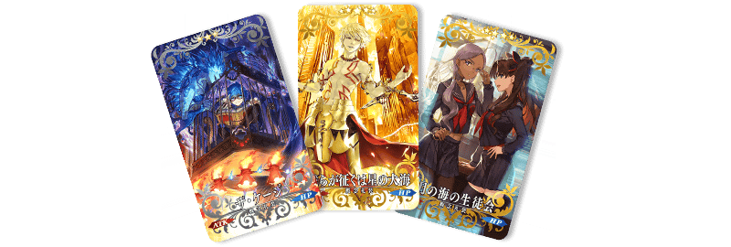
| 稀有度 | 名稱 |
|---|---|
| ★★★★★ | 我らが征くは星の大海 |
| ★★★★ | 月の海の生徒会 |
| ★★★ | ザ・ケージ |
◆2016年「New Year Pick Up召喚」限定概念禮裝◆
| 稀有度 | 名稱 |
|---|---|
| ★★★★★ | グランド・ニューイヤー |
| ★★★★ | ヒロイック・ニューイヤー |
| ★★★ | 2016年の平穏 |
| ★★★ | ジャングルの掟 |
◆「New Year2017Pick Up召喚」限定概念禮裝◆
| 稀有度 | 名稱 |
|---|---|
| ★★★★★ | ファースト・サンライズ |
| ★★★★ | 射初の一矢 |
| ★★★ | カッコーの巣の上で |
以期間限定舉辦葛飾北齋的體驗關卡！
迎接「★5(SSR)葛飾北齋」做為支援成員，挑戰期間限定的關卡！
S別錯過體驗Servant技能與寶具的機會！
◆葛飾北齋體驗關卡舉辦期間◆
2017年12月31日(日) 23:00～1月10日(三) 11:59
◆開放條件◆
通過「特異點F 炎上汙染都市 冬木」的Master對象
◆關卡通過報酬◆
白銀果實 2個
黃金果實 1個
呼符 1枚
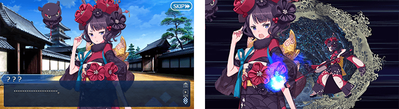
介紹期間限定Servant葛飾北齋的寶具演出！
在「Fate/Grand Order」官方網站內的公告中，公開了「★5(SSR)葛飾北齋」的寶具演出。敬請確認。
介紹宮本武藏、吉爾伽美什(Archer)、新宿的Archer、斯卡哈(Lancer)、Meltlilith的寶具演出！
在「Fate/Grand Order」官方網站內的公告中，公開了「★5(SSR)宮本武藏」「★5(SSR)吉爾伽美什(Archer)」「★5(SSR)新宿的Archer」「★5(SSR)斯卡哈(Lancer)」「★5(SSR)Meltlilith」的寶具演出。敬請確認。
【2018年1月7日(日) 23:00追記】
玉藻前(Caster)的戰鬥動作及寶具演出翻新！
◆翻新時間◆
2018年1月7日(日) 23:00～
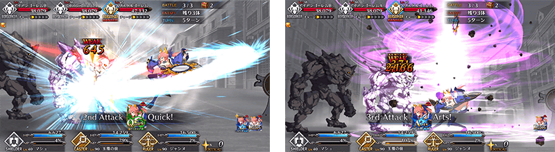
介紹翻新後的玉藻前(Caster)寶具演出！
在「Fate/Grand Order」官方網站內的公告中，公開了「★5(SSR)玉藻前(Caster)」的寶具演出。敬請確認。
| 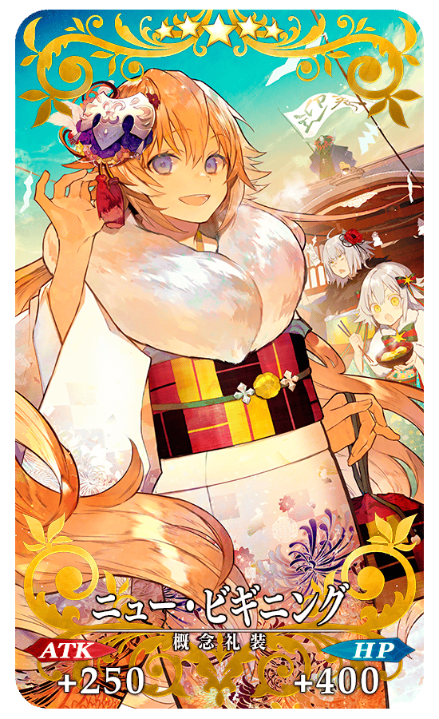 |
★★★★★SSR |
| 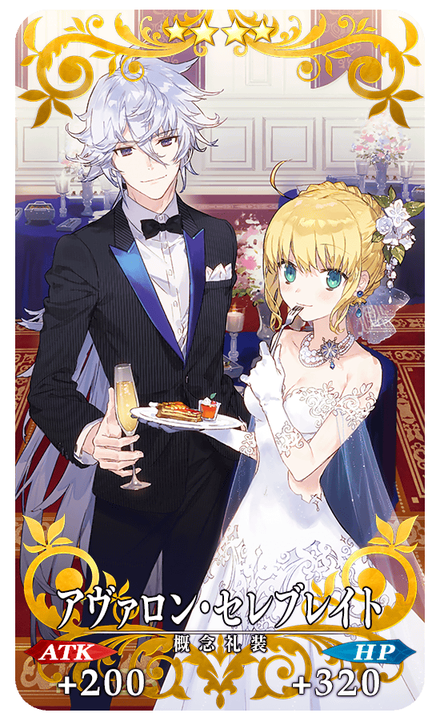 |
★★★★SR |
|
★★★R |
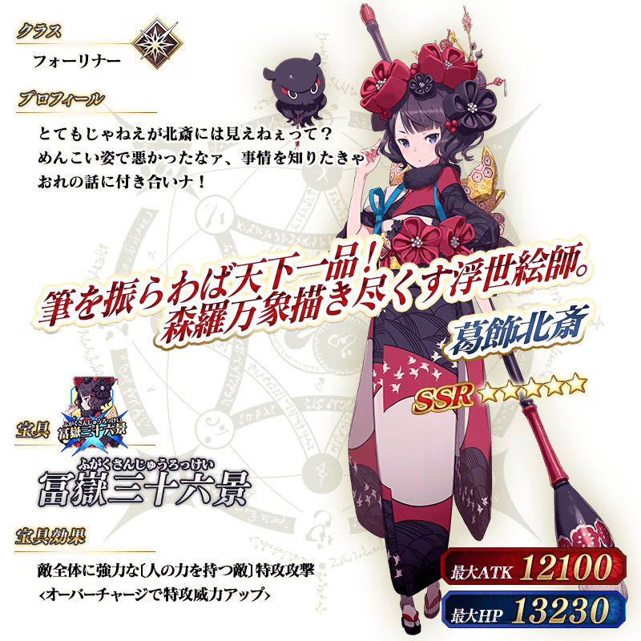
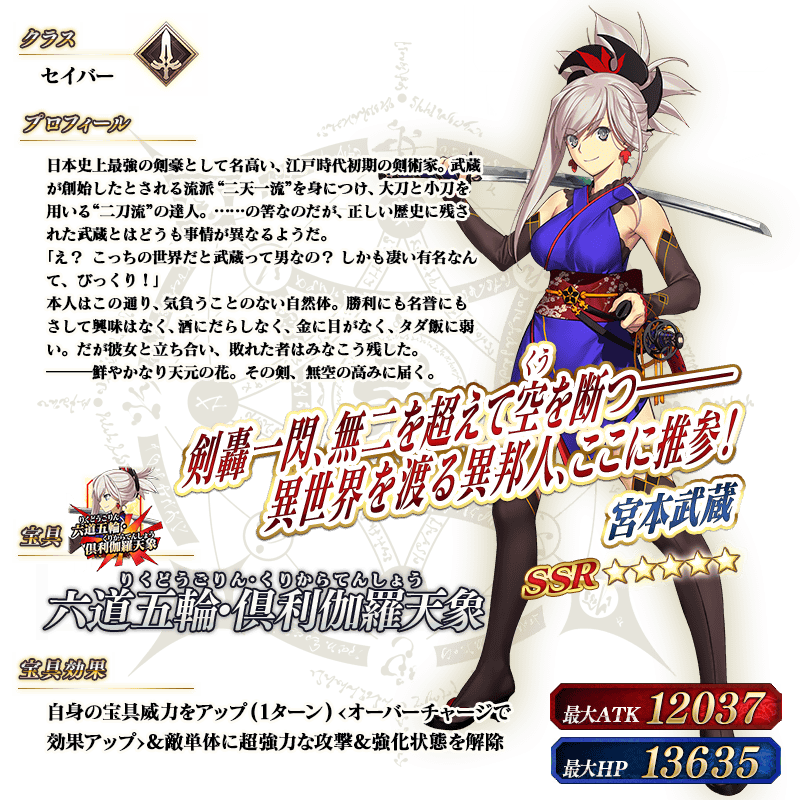
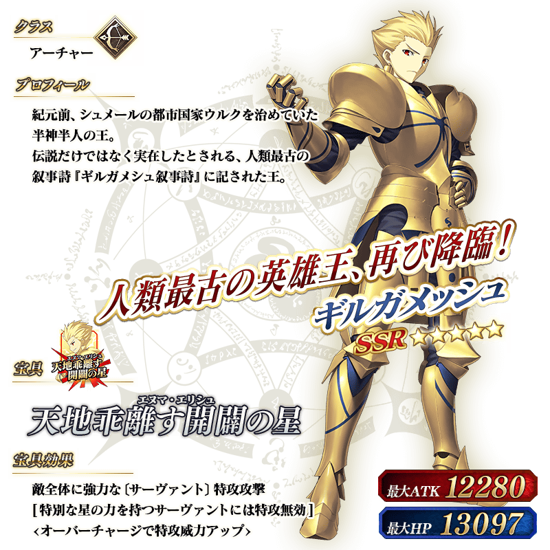
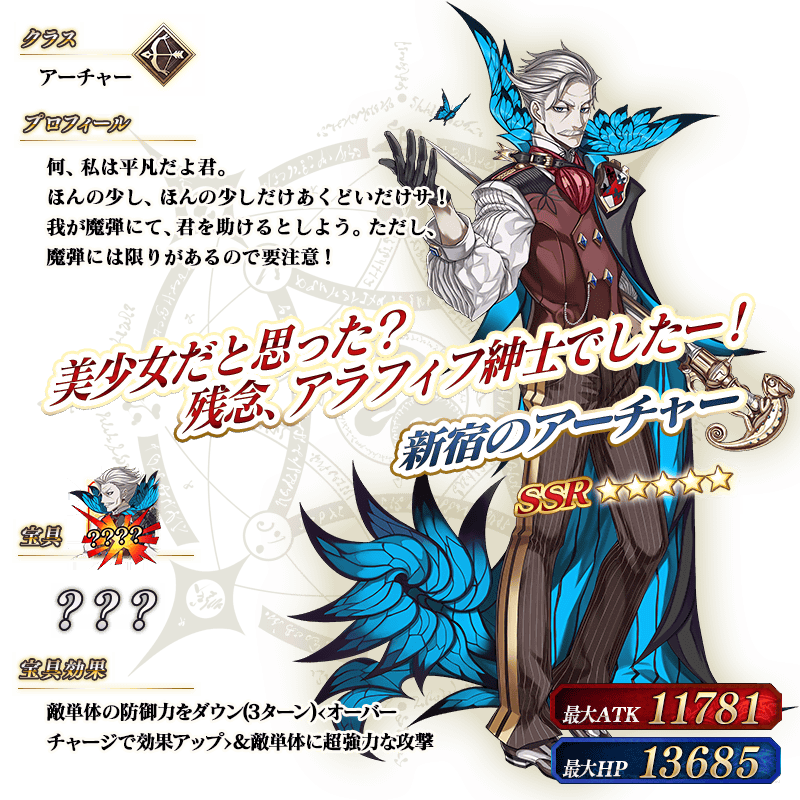
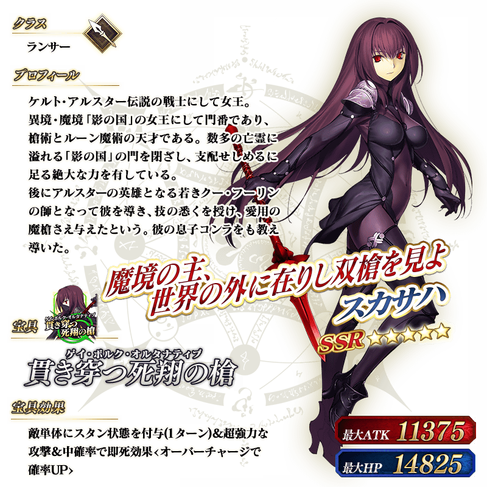

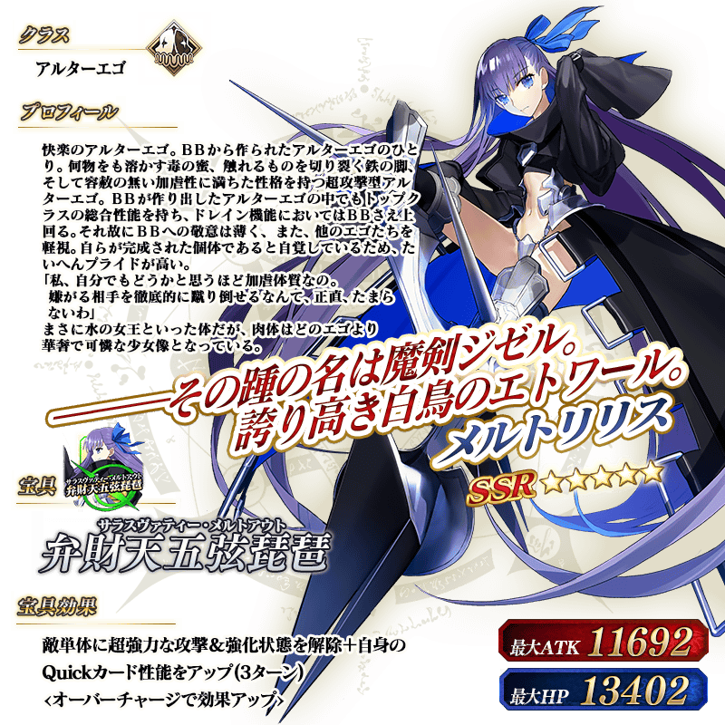
其他還有期間限定「2018年新年宣傳活動」和期間限定「福袋召喚2018」舉辦中！
詳情請自下述橫幅確認。